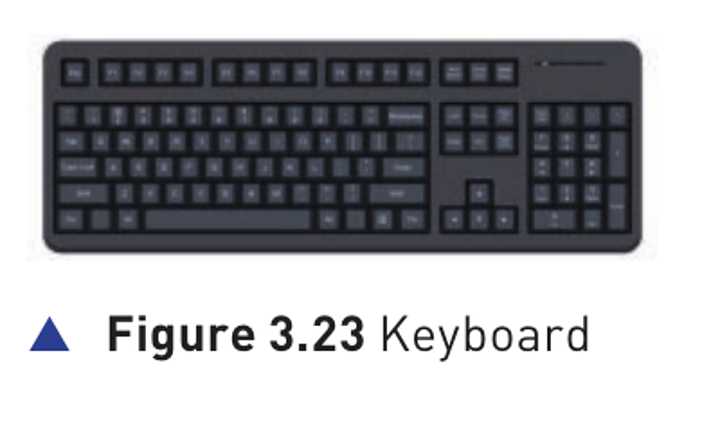
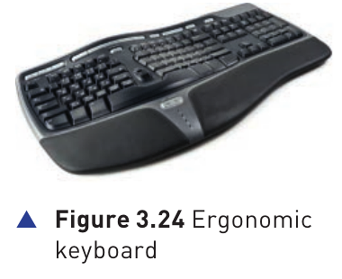
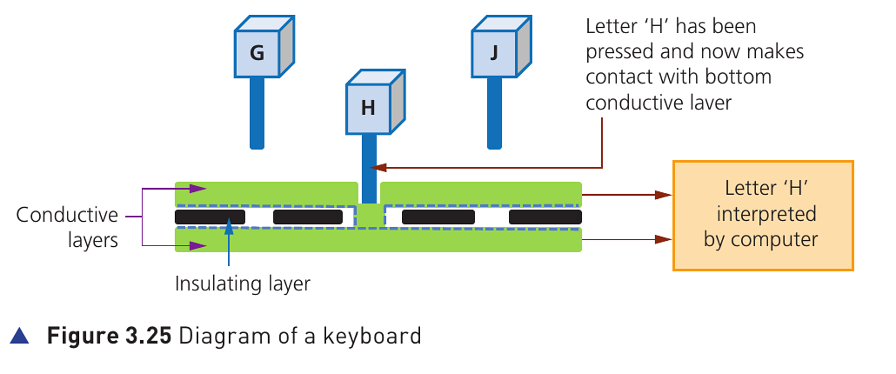

Keyboards · Hardware P93-P94

Keyboards are by far the most common method used for data entry (数据输入). They are used as the input devices (输入设备) on computers, tablets, mobile phones and many other electronic items.
The keyboard is connected to the computer either by using a USB connection (USB 连接) or by wireless connection (无线连接).
In the case of tablets and mobile phones, the keyboard is often virtual (虚拟的) or a type of touch screen technology (触摸屏技术).
As shown in Chapter 1, each character on a keyboard has an ASCII value (ASCII 编码值).
Each character pressed is converted into a digital signal (数字信号), which the computer interprets (解释/识别).
They are a relatively slow method of data entry and are also prone to errors (错误).
However keyboards are probably still the easiest way to enter text into a computer.
Unfortunately, frequent use of these devices can lead to injuries, such as repetitive strain injury (RSI) (重复性劳损) in the hands and wrists.

Ergonomic keyboards can help to overcome this problem — these have the keys arranged differently as shown in Figure 3.24. They are also designed to give more support to the wrists and hands when doing a lot of typing.

Figure 3.25 Diagram of a keyboard
The diagram shows the H key completing contact between conductive layers, so the computer can interpret the pressed key.
Exam focus: do not write only “the key sends H”. A complete answer should mention circuit completion, CPU identification, index file lookup and ASCII value.